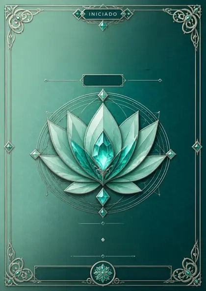
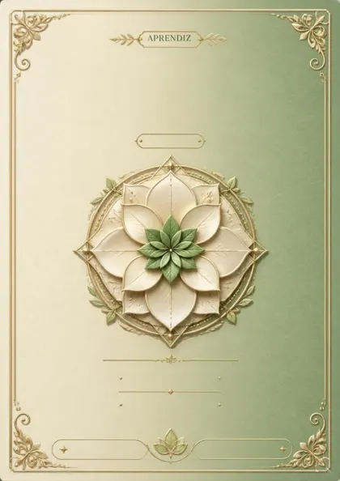
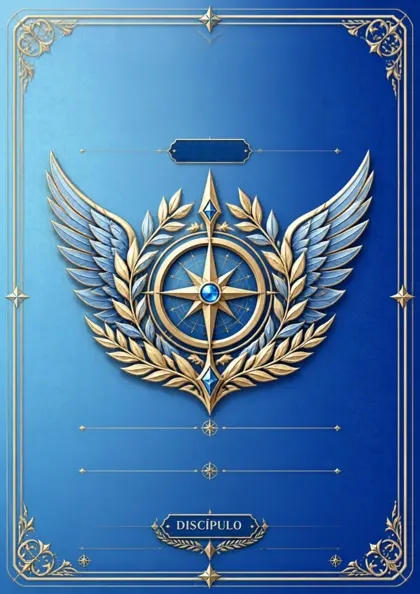
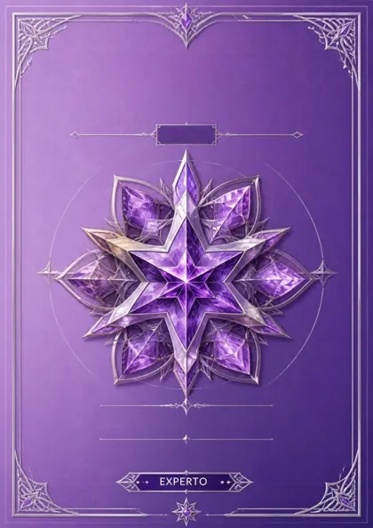
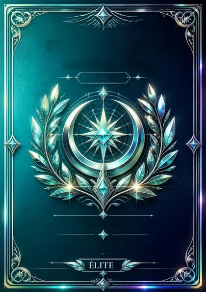
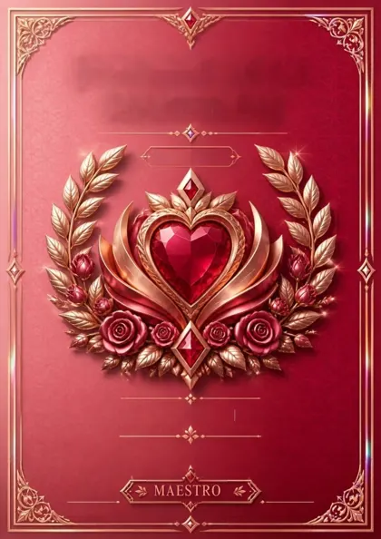
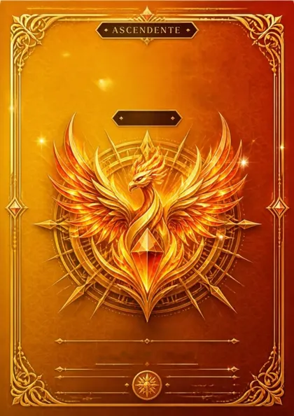
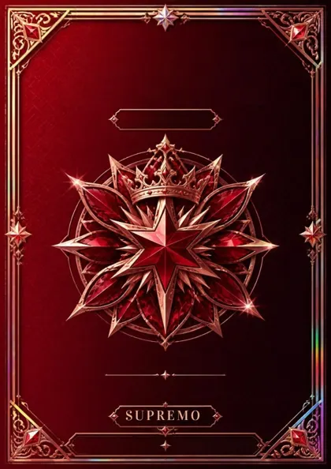
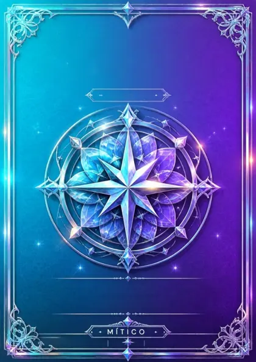
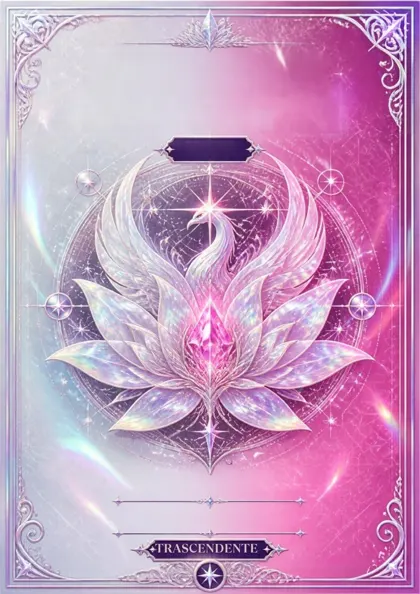

Free
0 €
- Hasta 5 hábitos y 1 proyecto
- Libreta, presupuesto global y PDF
- Turnos sin límite en Organización
- Chat, maestrías y 1 grupo propio
- Gráficos de los últimos 90 días
Hábitos · Turnos · Dinero · Amigos
KeepGoing junta lo que haces cada día en una sola app: los hábitos que quieres mantener, tus turnos de trabajo, tu dinero y la gente con la que compites. Cumples, sumas puntos y subes de nivel.
Se instala desde el navegador en iPhone, Android y ordenador. Funciona sin conexión.
La navegación
En KeepGoing no hay barra de pestañas. Abajo flota un orbe con el logo; mantenlo pulsado y salen las lunas en arco. Arrastra hasta una, suelta y entras. Pruébalo aquí: toca una luna o usa las flechas del teclado.
01 · Hábitos y Proyectos
Hábitos diarios, semanales o mensuales, de contar, de cantidad o para dejar algo. Los proyectos son carpetas con una meta.
Ver Hábitos01 · Hábitos y Proyectos
Cada hábito es un anillo. Lo tocas cuando lo cumples y, si es de cantidad, apuntas cuánto llevas. Cuando cumples todos, el día es perfecto y la pantalla entera lo celebra.
Toca los tres anillos.
Tu nivel de compromiso sale solo de cuántos hábitos tienes, y queda escrito en tu contrato personal. Los puntos te suben de nivel y se convierten en Dinero Caprichable: una cifra visual en la Libreta (por defecto el 0,5 % de tus ingresos por cada 10 puntos) para darte un capricho con la conciencia tranquila.
¡Día perfecto!
+0 pts · 0 días seguidos
Toca para cerrar
02 · Organización
Tus turnos, tus rutinas y los colores de cada día. Elige algo con el pincel y desliza el dedo por los días: las casillas laten una tras otra desde donde empezaste.
Desliza por los días. Si el primero ya lo tenía, se va quitando.
03 · Diario semanal
El Diario pone tus semanas en fila, como un pasillo: la más reciente delante. Viajas con la rueda, deslizando o con las flechas, y cada marco te cuenta cómo te fue.
Del 0 al 10. La forma del centro cambia contigo: picos rojos en un mal día, casi un círculo en un 5, pétalos verdes en uno bueno. La media de la semana va a su marco del Diario y cada nota se ve en Organización.
04 · Libreta
Gastos, ingresos, inversiones y deudas, cifrados con tu contraseña en tu propio móvil antes de subir a la nube. Ni nosotros podemos leerlos.
0 €
05 · Chat y grupos
Comparte un hábito o un proyecto y se crea un grupo: chat, ranking, retos en vivo con votación y torneos por eliminatorias. Gana quien más cumple.
06 · Maestrías
Las maestrías se ganan con días perfectos seguidos. Cada rango tiene su carta, de Iniciado a Trascendente; al desbloquearla, gira entre rayos de luz y se inclina siguiendo tu dedo. Luego la puedes enviar a un chat.










Cómo encaja todo
Sin cuenta, todo se queda en tu móvil. Con cuenta se sincroniza entre tus dispositivos y puedes usar chats y grupos.
La Libreta va cifrada con tu contraseña antes de salir del dispositivo. Si la olvidas, no se puede recuperar: así de en serio.
Sin anuncios y sin vender datos. Pagas, si quieres, por las funciones avanzadas. Y nada más.
Precios
0 €
14,99 € al año
14 días de reembolso voluntario. Las suscripciones se contratan desde la app, con tu cuenta.
Abre la app en el navegador. En iPhone: Compartir → «Añadir a pantalla de inicio». En Android y en el ordenador, el navegador te ofrece instalarla. Se abre como cualquier otra app y funciona sin conexión.
No. Sin cuenta, todo se guarda en tu dispositivo. La cuenta sirve para sincronizar entre dispositivos y para chats, grupos y torneos.
En español y en inglés.
Ajustes → Animaciones: según el sistema, siempre o reducidas. Con «reducidas» todo pasa a fundidos suaves.
Sí. Recordatorios de cada hábito, un resumen de lo pendiente por la mañana, retos que están a punto de acabar, mensajes nuevos y avisos antes de cada turno. Cada uno tiene su interruptor en Ajustes → Notificaciones.